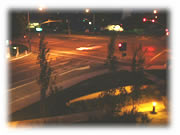
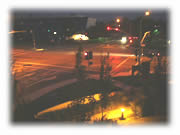

| ..*..*.. 2002年9月10日(火) 晴れ ..*..*.. ここのところ、また快晴の日が続いています。夜は星がきれいに見えるようになってきました。  だんだん暗くなるのが早くなってきて、これは8時半くらい。家のバルコニーから撮りました。 ところで、夜8時くらいになると、たぶん「雁」が西から東の方へ飛んでいきます。たくさんつらなって飛んでいくんだけど、鳴き声がするからわかります。うちのアパートからちょっと離れたところを飛んでいて、たまに、アパートの真上を飛んでいく団体もいて間近で見ることができるので、鳴き声がすると、思わず外に出て探してしまいます。 昨日の朝、６時半くらいにちょっと目が覚めたんだけど、同じように「雁」の鳴き声がしました。たぶん、朝は、東から西に飛んでいるのだろうな。  明日は9月11日。日本だと「同時多発テロ」と呼んでいるようですが、アメリカでは「9月11日のテロ(September 11's terrorist attacks)」と言っていて、ニュースでは毎日のように何かしら関連事項を話しています。容疑者が捕まったとか、怪しいとか。だから、「9月11日(September 11th)という言葉は「テロ」に結びつきます。 会社でも、マネージャーたちは、この日のスケジュールを入れるのを避ける傾向があったので、私は「もしかして休みになるのかも」とちょっと期待してしまいましたが、特にそういうことはありませんでした。 |